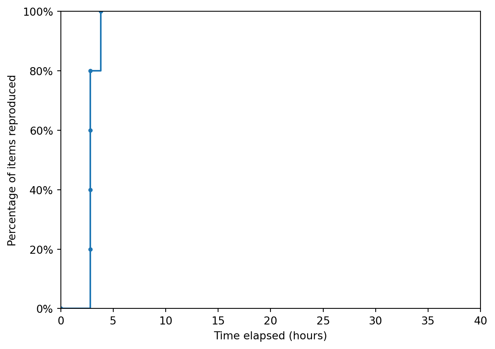
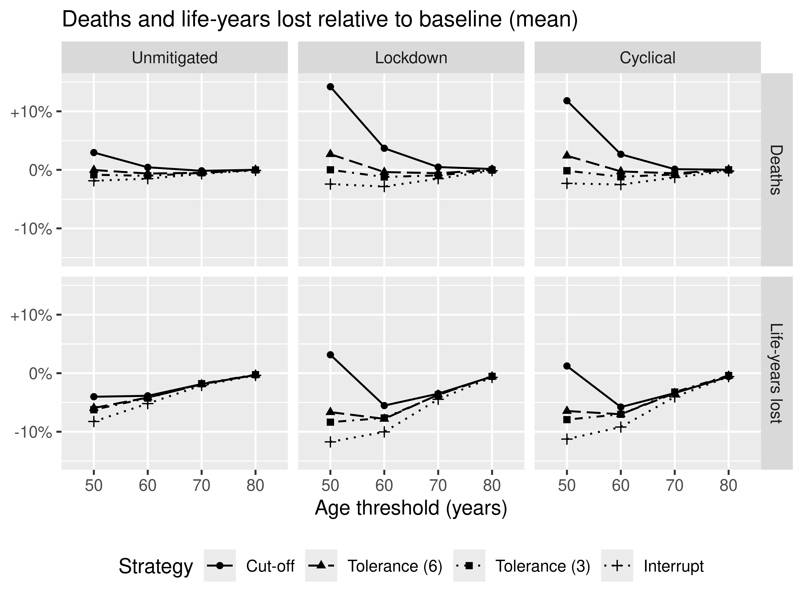
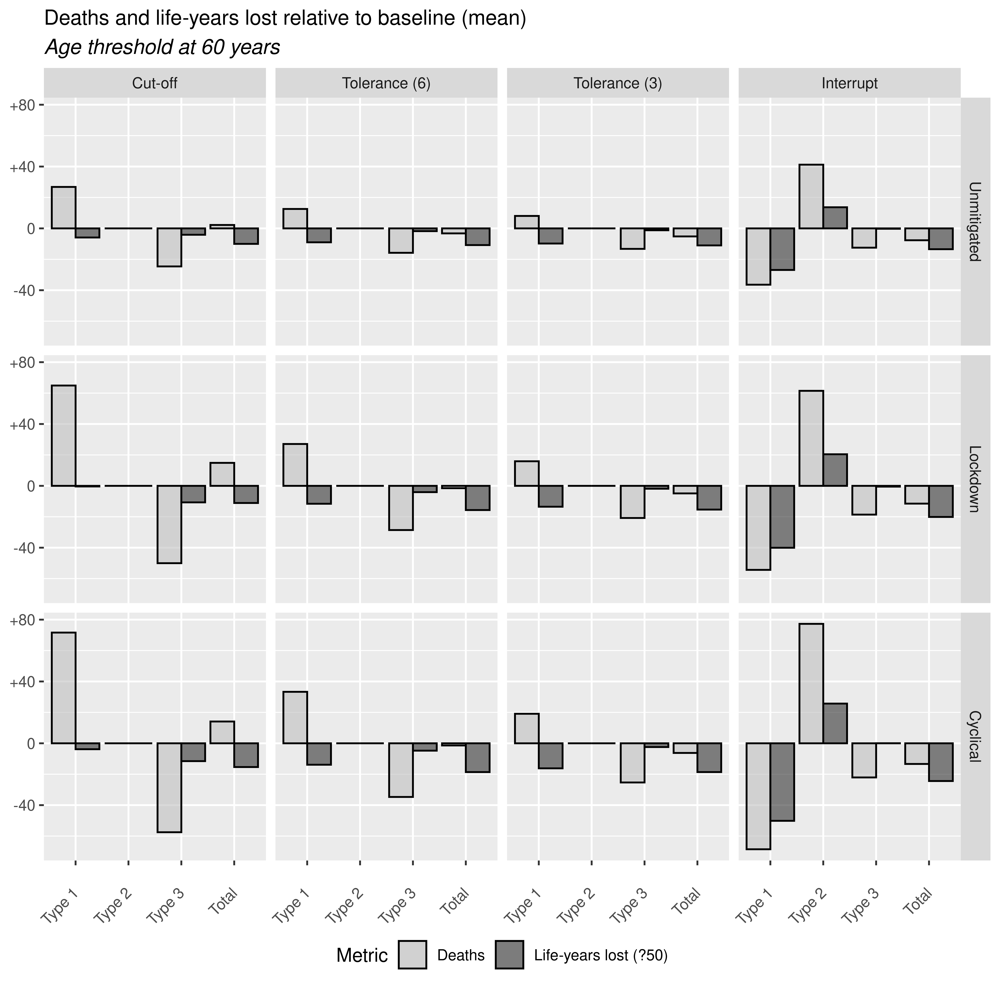
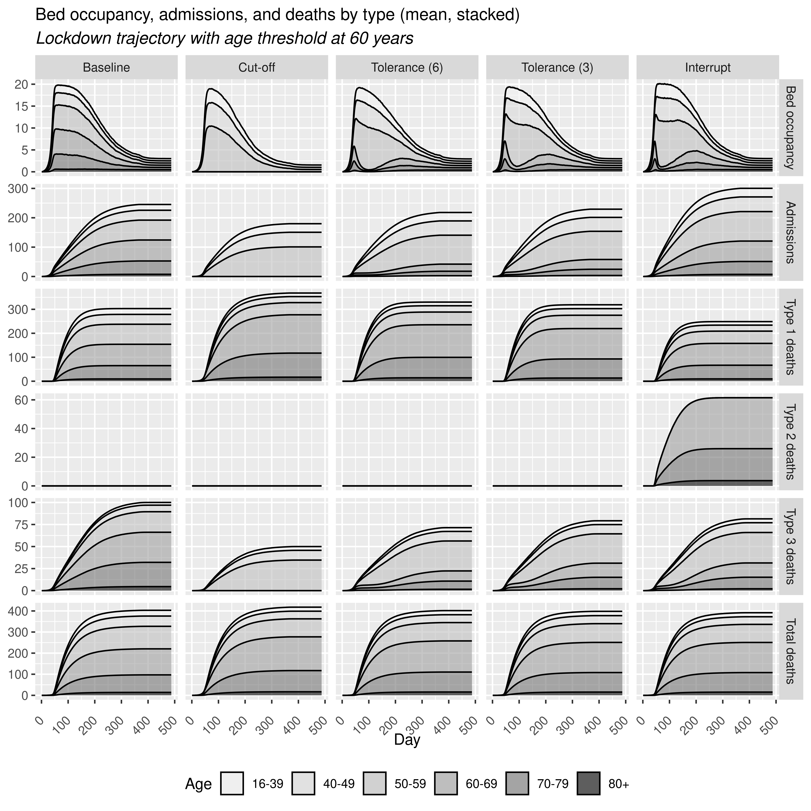
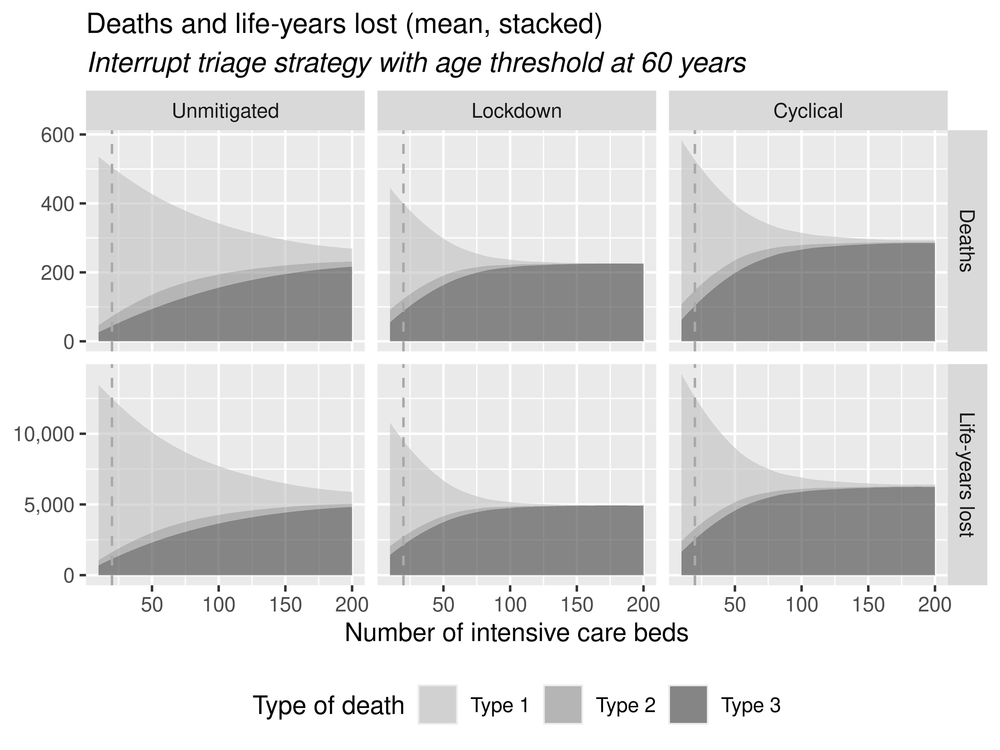

Reproduction success
Of the 5 items in the scope, 100% (5 out of 5) were considered to be successfully reproduced.
We do not have permission to upload and reuse images from the article, so please refer to the journal publication to view the figures and tables mentioned below from Wood et al. (2021).
Time-to-completion
Non-interactive plot:
Interactive plot:
Figure 4
Consensus: Successfully reproduced

Table 4
Consensus: Successfully reproduced
| scenario | policy | policy_param | crit | type1 | type2 | type3 | total | total_ly | |
|---|---|---|---|---|---|---|---|---|---|
| 0 | unmitigated | 1 | NaN | baseline | 455 (131 to 1178) | 0 (0 to 0) | 54 (37 to 75) | 509 (180 to 1237) | 12968 (4504 to 31634) |
| 1 | unmitigated | 1 | NaN | 50 | +54 (49 to 61) | 0 (0 to 0) | -39 (-50 to -30) | +15 (9 to 24) | -521 (-763 to -21) |
| 2 | unmitigated | 1 | NaN | 60 | +27 (23 to 27) | 0 (0 to 0) | -25 (-33 to -20) | +2 (-9 to 5) | -501 (-761 to -483) |
| 3 | unmitigated | 1 | NaN | 70 | +10 (8 to 9) | 0 (0 to 0) | -11 (-14 to -9) | -1 (-5 to 2) | -240 (-316 to -303) |
| 4 | unmitigated | 1 | NaN | 80 | +2 (0 to 5) | 0 (0 to 0) | -2 (-3 to -2) | +0 (-3 to -2) | -41 (-229 to 6) |
| 5 | unmitigated | 2 | 6.0 | 50 | +22 (22 to 24) | 0 (0 to 0) | -22 (-30 to -16) | 0 (-4 to 7) | -770 (-1178 to -469) |
| 6 | unmitigated | 2 | 6.0 | 60 | +13 (13 to 13) | 0 (0 to 0) | -16 (-22 to -12) | -3 (-8 to 0) | -540 (-641 to -436) |
| 7 | unmitigated | 2 | 6.0 | 70 | +5 (-4 to 2) | 0 (0 to 0) | -8 (-11 to -7) | -3 (-6 to -5) | -247 (-506 to -290) |
| 8 | unmitigated | 2 | 6.0 | 80 | +1 (1 to 3) | 0 (0 to 0) | -1 (-3 to -1) | +0 (0 to 0) | -34 (-59 to 136) |
| 9 | unmitigated | 2 | 3.0 | 50 | +13 (10 to 11) | 0 (0 to 0) | -17 (-23 to -14) | -4 (-7 to 3) | -808 (-1076 to -434) |
| 10 | unmitigated | 2 | 3.0 | 60 | +8 (7 to 14) | 0 (0 to 0) | -13 (-18 to -10) | -5 (-5 to -2) | -551 (-581 to -572) |
| 11 | unmitigated | 2 | 3.0 | 70 | +4 (3 to 4) | 0 (0 to 0) | -6 (-9 to -5) | -3 (0 to 1) | -233 (-254 to -247) |
| 12 | unmitigated | 2 | 3.0 | 80 | +1 (1 to 2) | 0 (0 to 0) | -1 (-3 to -1) | 0 (-2 to 1) | -32 (-55 to 127) |
| 13 | unmitigated | 3 | NaN | 50 | -43 (-58 to -32) | +50 (26 to 71) | -16 (-22 to -12) | -10 (-16 to -7) | -1070 (-1516 to -708) |
| 14 | unmitigated | 3 | NaN | 60 | -36 (-48 to -35) | +41 (26 to 58) | -12 (-17 to -10) | -8 (-8 to -7) | -673 (-822 to -614) |
| 15 | unmitigated | 3 | NaN | 70 | -17 (-24 to -18) | +20 (11 to 30) | -6 (-10 to -4) | -3 (-3 to -2) | -270 (-494 to -242) |
| 16 | unmitigated | 3 | NaN | 80 | -2 (-4 to -1) | +3 (0 to 7) | -1 (-4 to -1) | 0 (-2 to 1) | -48 (-227 to 90) |
| 17 | lockdown | 1 | NaN | baseline | 303 (49 to 888) | 0 (0 to 0) | 100 (54 to 158) | 403 (116 to 1014) | 10033 (2751 to 25817) |
| 18 | lockdown | 1 | NaN | 50 | +136 (113 to 137) | 0 (0 to 0) | -79 (-116 to -48) | +57 (44 to 55) | +316 (-848 to 988) |
| 19 | lockdown | 1 | NaN | 60 | +65 (59 to 63) | 0 (0 to 0) | -50 (-73 to -31) | +15 (10 to 21) | -555 (-1323 to 13) |
| 20 | lockdown | 1 | NaN | 70 | +23 (18 to 24) | 0 (0 to 0) | -21 (-30 to -15) | +2 (-1 to 6) | -351 (-725 to -113) |
| 21 | lockdown | 1 | NaN | 80 | +3 (5 to 23) | 0 (0 to 0) | -3 (-3 to -1) | +1 (3 to 12) | -57 (-26 to 22) |
| 22 | lockdown | 2 | 6.0 | 50 | +47 (38 to 51) | 0 (0 to 0) | -36 (-62 to -17) | +11 (-1 to 14) | -667 (-2201 to 45) |
| 23 | lockdown | 2 | 6.0 | 60 | +27 (22 to 26) | 0 (0 to 0) | -29 (-51 to -14) | -2 (-3 to 8) | -783 (-1343 to -195) |
| 24 | lockdown | 2 | 6.0 | 70 | +11 (11 to 13) | 0 (0 to 0) | -13 (-22 to -6) | -2 (0 to 3) | -369 (-338 to -156) |
| 25 | lockdown | 2 | 6.0 | 80 | +1 (2 to 4) | 0 (0 to 0) | -1 (-4 to 0) | +0 (-1 to 4) | -57 (-50 to 59) |
| 26 | lockdown | 2 | 3.0 | 50 | +24 (15 to 36) | 0 (0 to 0) | -24 (-42 to -9) | +0 (-6 to 1) | -839 (-1869 to -261) |
| 27 | lockdown | 2 | 3.0 | 60 | +16 (12 to 21) | 0 (0 to 0) | -21 (-38 to -11) | -5 (-11 to 3) | -768 (-1310 to -237) |
| 28 | lockdown | 2 | 3.0 | 70 | +7 (2 to 7) | 0 (0 to 0) | -10 (-18 to -6) | -4 (-7 to -1) | -373 (-485 to -319) |
| 29 | lockdown | 2 | 3.0 | 80 | +1 (1 to 1) | 0 (0 to 0) | -1 (-5 to 0) | 0 (0 to 5) | -54 (1 to 67) |
| 30 | lockdown | 3 | NaN | 50 | -49 (-100 to -13) | +55 (9 to 123) | -16 (-30 to -5) | -10 (-22 to 0) | -1177 (-2591 to -278) |
| 31 | lockdown | 3 | NaN | 60 | -54 (-84 to -27) | +61 (21 to 117) | -19 (-33 to -10) | -11 (-16 to -6) | -1006 (-1613 to -470) |
| 32 | lockdown | 3 | NaN | 70 | -29 (-42 to -16) | +32 (12 to 60) | -9 (-17 to -5) | -6 (-8 to -1) | -447 (-599 to -199) |
| 33 | lockdown | 3 | NaN | 80 | -4 (-5 to -1) | +5 (1 to 11) | -1 (-2 to 0) | -1 (-2 to 1) | -71 (-197 to -33) |
| 34 | cyclical | 1 | NaN | baseline | 412 (39 to 1276) | 0 (0 to 0) | 118 (54 to 167) | 531 (101 to 1435) | 13264 (2362 to 36507) |
| 35 | cyclical | 1 | NaN | 50 | +155 (104 to 136) | 0 (0 to 0) | -92 (-115 to -48) | +63 (22 to 52) | +163 (-2339 to 996) |
| 36 | cyclical | 1 | NaN | 60 | +72 (58 to 60) | 0 (0 to 0) | -58 (-69 to -33) | +14 (-5 to 21) | -768 (-1843 to 86) |
| 37 | cyclical | 1 | NaN | 70 | +25 (22 to 35) | 0 (0 to 0) | -24 (-29 to -14) | +1 (-2 to 7) | -451 (-640 to -36) |
| 38 | cyclical | 1 | NaN | 80 | +3 (0 to 6) | 0 (0 to 0) | -3 (-5 to -1) | +0 (0 to 1) | -77 (13 to 21) |
| 39 | cyclical | 2 | 6.0 | 50 | +58 (24 to 78) | 0 (0 to 0) | -45 (-69 to -11) | +13 (-10 to 9) | -857 (-3036 to 6) |
| 40 | cyclical | 2 | 6.0 | 60 | +33 (16 to 50) | 0 (0 to 0) | -35 (-52 to -9) | -1 (-16 to 4) | -931 (-1938 to -89) |
| 41 | cyclical | 2 | 6.0 | 70 | +13 (3 to 13) | 0 (0 to 0) | -16 (-25 to -4) | -3 (-12 to 0) | -452 (-809 to -84) |
| 42 | cyclical | 2 | 6.0 | 80 | +2 (-1 to 12) | 0 (0 to 0) | -2 (-3 to 1) | +0 (0 to 4) | -59 (-39 to 151) |
| 43 | cyclical | 2 | 3.0 | 50 | +29 (8 to 43) | 0 (0 to 0) | -30 (-51 to -6) | -1 (-14 to 5) | -1052 (-2940 to -12) |
| 44 | cyclical | 2 | 3.0 | 60 | +19 (5 to 31) | 0 (0 to 0) | -25 (-43 to -6) | -6 (-16 to 1) | -930 (-1956 to -167) |
| 45 | cyclical | 2 | 3.0 | 70 | +9 (2 to 13) | 0 (0 to 0) | -13 (-24 to -3) | -4 (-1 to 0) | -428 (-731 to -24) |
| 46 | cyclical | 2 | 3.0 | 80 | +2 (-1 to 7) | 0 (0 to 0) | -2 (-3 to 1) | 0 (1 to 4) | -53 (-37 to 126) |
| 47 | cyclical | 3 | NaN | 50 | -64 (-135 to -11) | +72 (6 to 167) | -20 (-37 to -3) | -12 (-26 to -3) | -1493 (-3346 to -177) |
| 48 | cyclical | 3 | NaN | 60 | -69 (-115 to -19) | +77 (15 to 142) | -22 (-39 to -4) | -13 (-21 to -3) | -1220 (-2083 to -281) |
| 49 | cyclical | 3 | NaN | 70 | -35 (-54 to -18) | +40 (9 to 71) | -12 (-19 to -2) | -7 (-3 to -1) | -537 (-812 to -119) |
| 50 | cyclical | 3 | NaN | 80 | -5 (-7 to 12) | +6 (1 to 14) | -2 (-4 to 0) | -1 (0 to 6) | -77 (13 to 25) |
Figure 5
Consensus: Successfully reproduced

Figure 6
Consensus: Successfully reproduced

Figure 7
Consensus: Successfully reproduced

References
Wood, Richard M., Adrian C. Pratt, Charlie Kenward, Christopher J. McWilliams, Ross D. Booton, Matthew J. Thomas, Christopher P. Bourdeaux, and Christos Vasilakis. 2021. “The Value of Triage During Periods of Intense COVID-19 Demand: Simulation Modeling Study.” Medical Decision Making 41 (4): 393–407. https://doi.org/10.1177/0272989X21994035.